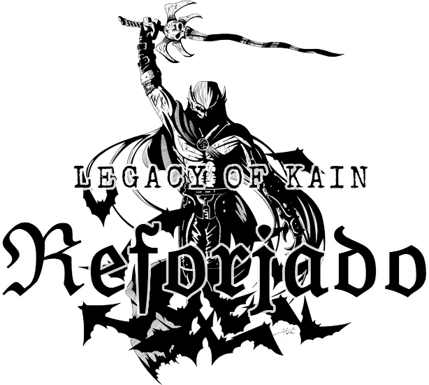
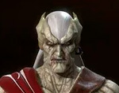
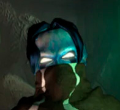
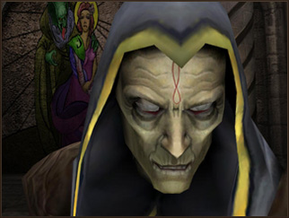
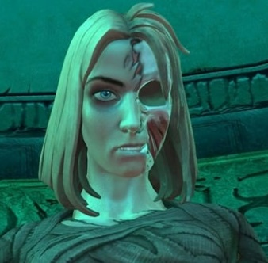
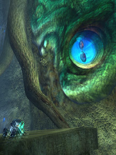
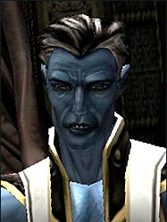
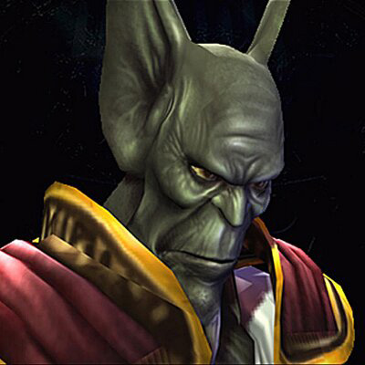
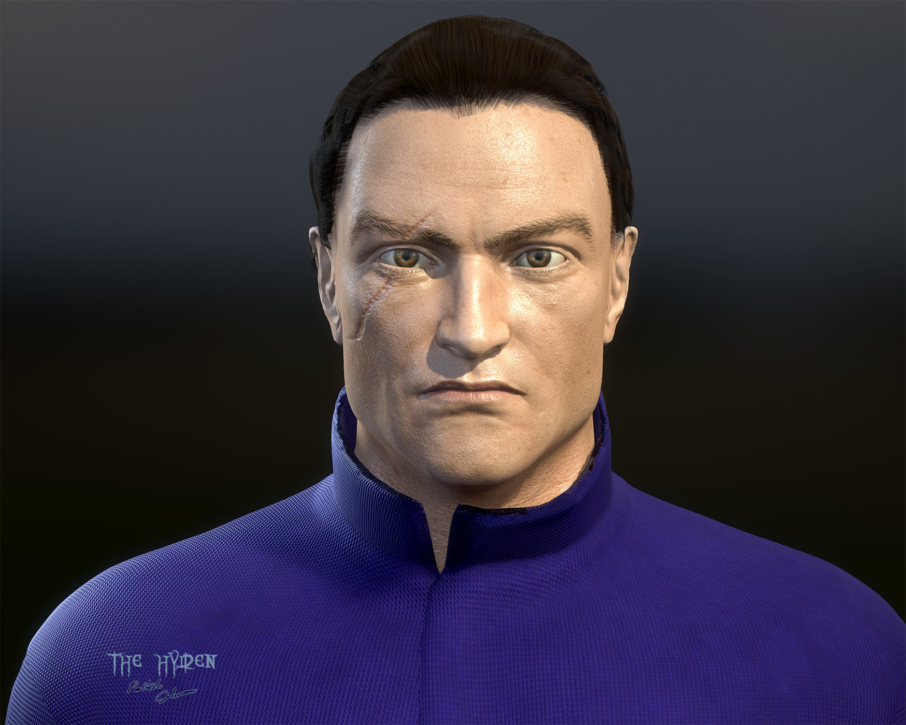

Legacy of Kain: Reforjado
¿Qué es Legacy of Kain: Reforjado? ▼
¿En qué consiste el reforjado? ▼
¿Cuándo estará listo el proyecto? ▼
¿Se van a doblar todos los juegos? ▼
¿Se está realizando el doblaje con IA? ▼
Casting de voces








Mods gráficos
¿En qué consisten los Mods Gráficos?
Desde la comunidad de fans han surgido varios mods que mejoran la experiencia de juego mediante modificaciones gráficas. En Legacy of Kain en Español hemos decidido integrar algunos de estos Mods Gráficos como parte del proyecto Reforjado. Lo hacemos con la intención de que "nuestro universo" de Legacy of Kain reúna el talento y el esfuerzo de la comunidad en un proyecto unificado que ofrezca una experiencia definitiva.
Eso sí, no se incluirán todos los mods existentes sin criterio, como si se tratara de un cajón de sastre. Solo seleccionaremos aquellos que consideremos alineados con la filosofía y el espíritu del proyecto.
Aunque el equipo del Remaster ha hecho un gran trabajo, la mayoría de estos mods están diseñados específicamente para las versiones remasterizadas, que permiten un acceso más sencillo a los archivos del juego. La comunidad ha sabido aprovechar esto para enriquecer aún más la saga, y nosotros no seremos la excepción: nuestro objetivo es mejorar todos los títulos de la franquicia en la medida de lo posible.
En esta sección encontrarás una lista detallada de todos los cambios y mods que formarán parte del proyecto Reforjado.
SR2 Character Model Tweaks
Este Mod se encarga de mejorar el aspecto de algunos personajes estilizándolos y dándoles una imagen
más realista.
Todos los créditos a su autor: vargatomi
Podéis consultar la información oficial y descargarlo en la página de Nexus Mods
DescargarCambios:
- Raziel tiene las alas más largas. Se acercan más a como se veían en Defiance.
- También tiene una columna y un rostro más delgados. El modelo original lo hacía ver demasiado bajo y robusto.
- El rostro de Moebius era redondo como el de un bebé, así que se afinó y se le marcó más la barbilla y los pómulos.
- Janos también tenía un rostro un poco aniñado, así que se intentó envejecerlo un poco.
- Las costillas de Kain sobresalían de una forma extraña, así que se suavizaron un poco y se le ensancharon un poco las caderas.
- Ariel tiene mechones de cabello más largos, para que, una vez más, se acerque a su modelo en Defiance. Hay un poco de clipping, pero era de esperarse.
- Se intentó arreglar los ojos desorbitados de Raziel Sarafan. No es muy notorio por ahora, pero podría mejorar en una futura actualización.
Cambios en la versión v1.1:
- Se añadió a Vorador con algunos ajustes sutiles.
- Se refinó a Janos Audron.
- Se realizaron algunos retoques a ciertos demonios.
Cómo instalar:
Solo copia el contenido del paquete en la carpeta de tu juego y sobrescribe los archivos existentes.
Busca el directorio: ~\Soul Reaver I-II\2\OBJECT
NOTA: Es MUY recomendable hacer una copia de seguridad antes, por si quisieras
restituir los modelos originales.
Si solo deseas probar un personaje en particular, puedes elegir los archivos que llevan su nombre.